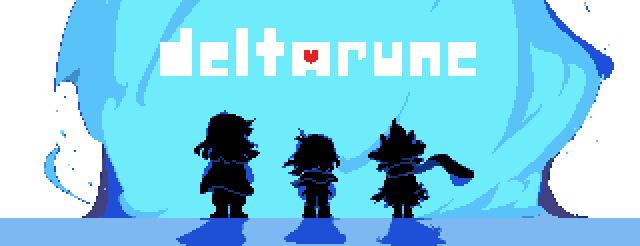
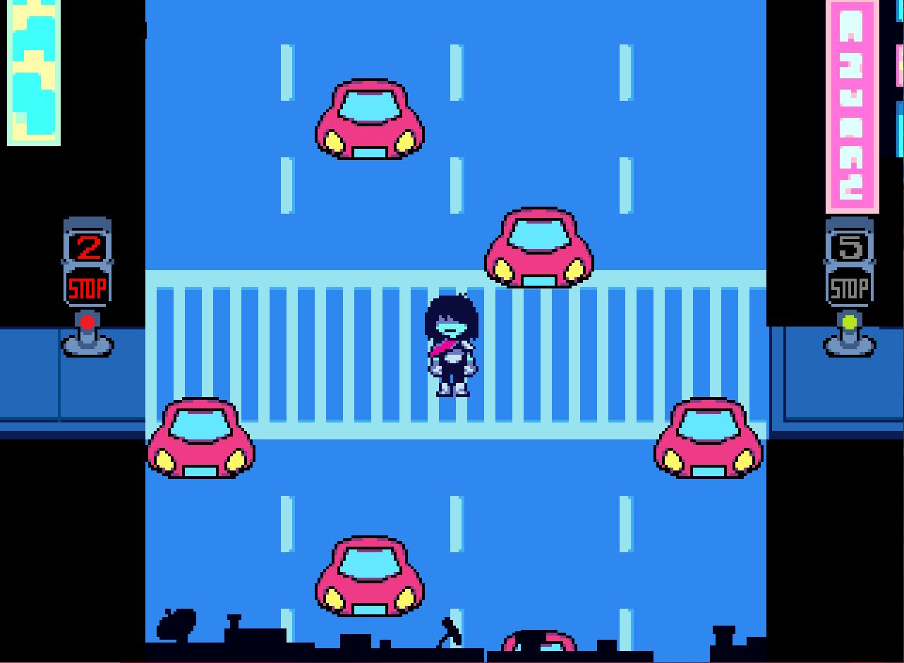
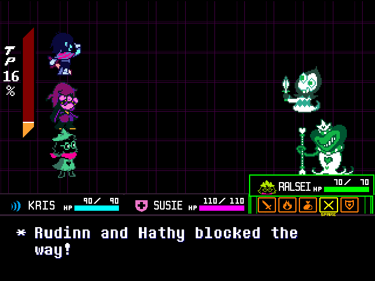
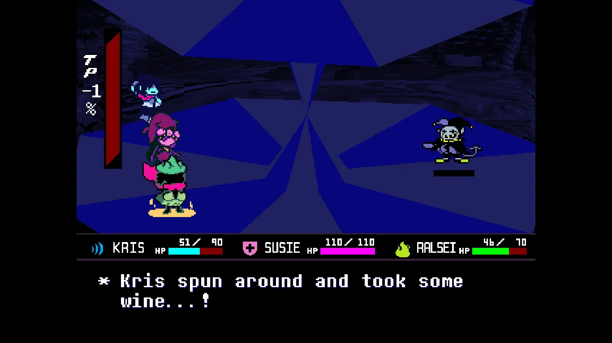
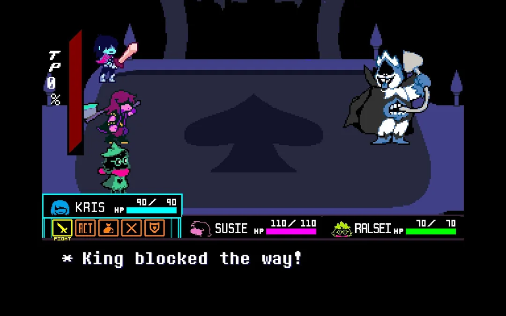
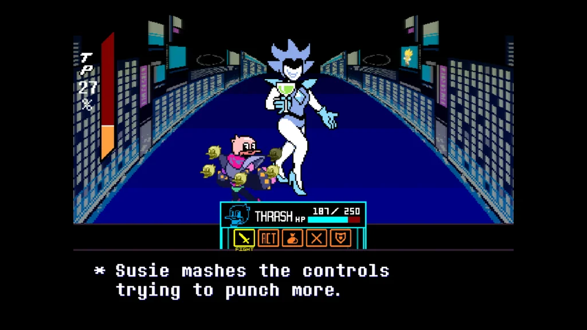
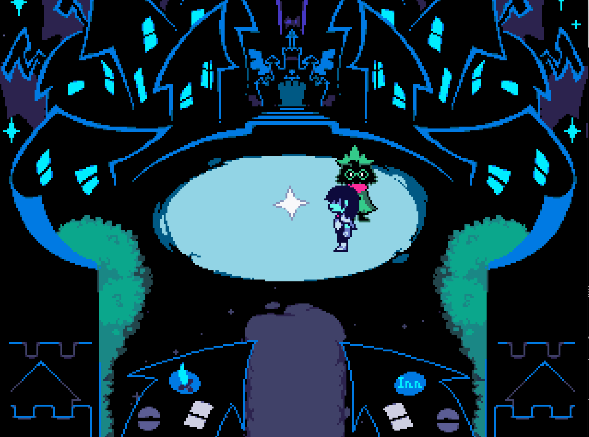

DELTARUNE
Deltarune is een episodische RPG gemaakt door Toby Fox. In het spel bestuurt de speler een menselijke tiener, Kris, die voorbestemd is om samen met Susie, een monster, en Ralsei, een prins uit de Donkere Wereld, de wereld te redden. Tijdens hun zoektocht om de Dark Fountains te verzegelen, waarvan werd voorspeld dat ze de wereld zouden beëindigen, maakt de groep zowel vrienden als vijanden.






